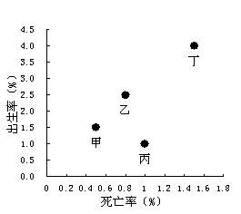
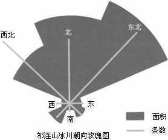
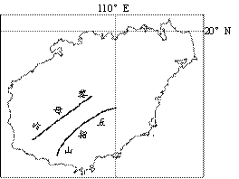
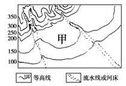
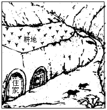
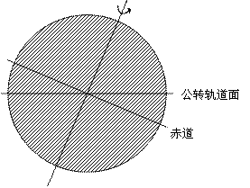
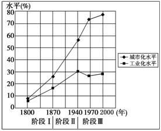
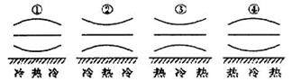

制作：吕群
None - Fade - Slide - Convex - Concave - Zoom
选择班级
幻灯片样式
Black (default) -
White -
League -
Sky -
Beige -
Simple
Serif -
Blood -
Night -
Moon -
Solarized
1．为了减少运费，下列企业最需要接近市场的是
A．制糖厂
B．造船厂
C．瓶装饮料厂
D．火力发电厂
2．海运在货运中占有重要地位，其主要原因是
A．海面宽阔，航线长
B．运量大，运费低
C．海岸线曲折，海浪小
D．运距长，速度快
3．中东地区沙漠广布，制约中东地区环境承载力的主要自然资源是
A．土地资源
B．光热资源
C．淡水资源
D．矿产资源
图1为甲、乙、丙，丁四地区的人口出生率与死亡率统计图，读图并结合所学知识，完成4-5题。
4．人口出生率最高的地区是
A．甲
B．乙
C．丙
D．丁
5．人口自然增长率最低的地区是
A．甲
B．乙
C．丙
D．丁
6．相对于华北平原．我国西南地区交通基础设施建设难度大的主要原因是
A．植被稀疏
B．人口稀少
C．资源贫乏
D．地形复杂
7．可对地理空间致据进行管理、分析和可视化表达并用于国土整治的技术是
A．地理信息系统
B．全球定位系统
C．遥感
D．管理信息系统
图2是祁连山冰川分布玫瑰图，线条越长，表示冰川数量越多；阴影面积越大，表示冰川面积越大。读图并结合所学知识，完成8-10题。
8．祁连山冰川面积与数量的分布特征是
A．东南多西北少
B．南多北少
C．西南多东北少
D．北多南少
9．东北部和西北部冰川数量相差不多，但面积差异显著，这主要是因为东北部比西北部
A．日照时间更长
B．降水总量更多
C．太阳辐射更强
D．蒸发强度更大
10．由图推断，祁连山冰川分布高度最低的方位是
A．东北
B．西北
C．东南
D．西南
11．关于城市空间形态的叙述，正确的是
A．受城市规划影响，城市空间形态与所处地理环境关系不大
B．山区受地形限制，不同地区城市空间形态差别不大
C．山区用地比较集中，城市空间形态往往形成同心圆状
D．沿河谷发展的城市，城市空间形态往往成条带状
12．影响当今世界人口迁移的最主要因素是
A．政治因素
B．文化因素
C．经济因索
D．宗教因素
图3是我国华东地区某城市某月连续4天的天气预报信息。读图并结合所学知识，完成13-14题。
13．由图推断，这段时间所属月份最可能是
A．1月
B．4月
C．7月
D．10月
14．由图推断，这四天影响该城市的主要天气系统为
A．准静止锋
B．反气旋
C．冷锋
D．暖锋
15．某考察队在野外考察时．发到某地岩层中含有大量古生物化石，说明此岩层属于
A．花岗岩
B．沉积岩
C．变质岩
D．侵入岩
16．我国西部地区无然气储量大。把塔里木盆地的天然气输送到华东地区的最佳运输方式是
A．公路
B．水路
C．铁路
D．管道
17．民航班机从北京到乌鲁木齐空中飞行约需3.5小时，从乌鲁木齐返回至北京，却只需约3小时。造成这一差异的自然原因可能是
A．地球公转的影响
B．两地时差的影响
C．西风环流的影响
D．地球偏向力的影响
读海南岛地理简图（图四），结合所学知识，完成18-19题。
18．关于该岛气候及其特征的叙述，正确的是
A．光照充足，四季分明
B．因山地屏蔽，基本不受台风影响
C．地处低纬，几乎没有霜冻
D．气候类型为热带雨林气候
19．该岛扩大沿海红树林防护带的目的主要是
为了减少
A．风暴潮的危害
B．水土流失
C．大气污染的危害
D．泥石流的发生
20．造成我国南方多水田，北方多旱地的农业生产活动地域差异主要自然因素是
A．降水
B．地形
C．土壤
D．热量
21．下列关于城市商业区的说法中，正确的是
A．商业区只分布在城市中心，呈块状分布
B．中心商务区是城市经济活动最繁忙的地区
C．商业区是城市内所有商业集中分布的地区
D．在交通干线上都会形成中心商务区
22．有关环境问题与经济发展关系的叙述，正确的是
A．经济越发展，环境问题就越严重、越难治理
B．环境问题是在人类社会的经济发展过程中产生的
C．解决环境问题的根本出路在于人类必须限制经济发展
D．环境问题是自然界本身的问题，与人类经齐活动无关
20世纪初至1980年代，洞庭湖面积不断减小。1998年以来，经过综合治理，如今洞庭湖的面积扩大了五分之一。结合材料及所学知识，完成23-24题。
23．洞庭湖库容减小将会导致
A．湖区生物多样性减少
B．长江下游降水减少
C．湖区航运能力提升
D．湖泊蓄洪能力增强
24．1998年以后，经过综合治理，洞庭湖各方面环境条件均有了改善。这一做法体现的人地关系思想是
A．地理环境决定论
B．地理环境可能论
C．人类中心论
D．人地协调论
图5为我国北方某区域地形图。读图并结合所学知识，完成25-27题。
25．甲地的地貌类型是
A．喀斯特溶洞
B．冲积扇
C．新月形沙丘
D．火山口
26．形成甲处地貌的主要外力作用是
A．流水堆积作用
B．风力堆积作用
C．风化作用
D．冰川堆积作用
27．甲处所属的自然带是
A．热带雨林带
B．亚热带常绿阔叶林带
C．亚热带常绿硬叶林带
D．温带落叶阔叶林带
28．下列措施中，有利于青藏铁路沿线生态环境保护的是
A．把永久冻土层融化，为植树造林提供水分
B．建立沿线防护栏，禁止野生动物穿越铁路
C．随车的生活垃圾统一收集，集中处理
D．沿线大力垦荒种地，为游客提供土特产
29．下列各组区域单元中，可以按照同一类指标归类的是
A．黄河流域、东南丘陵、寒带
B．湿润地区、半干旱地区、干旱地区
C．热带、温带、江南丘陵
D．广东省、广州市、云贵高原
图6是我国某地景观示意图。读图并结合所学知识，完成30-33题。
30．图中景观所示的地区可能是
A．内蒙古高原
B．黄土高原
C．云贵高原
D．青藏高原
31．下列条件与形成这一居住景观最相关的是
A．降水丰富
B．地表平坦
C．水质特征
D．水系发达
32．该地区最主要的环境问题是
A．水土流失
B．洪涝灾害
C．地层下陷
D．土壤盐渍化
33．该地区种植的农作物主要是
A．水稻
B．小麦
C．青稞
D．甘蔗
34．下列具有因→果关联的灾害是
A．暴雨→泥石流
B．洪涝→台风
C．火山→沙尘暴
D．滑坡→地震
35．在我国城市住宅小区建设时，北方楼房间距应比南方更宽。其考虑的主要自然因素是
A．海拔高度
B．正午太阳高度
C．昼夜长短
D．降水丰度
36．下列行为符合低碳生活的是
A．尽量多买新衣服
B．尽量多喝饮料少喝水
C．尽量多开小车出行
D．尽量选购简易包装食品
读地球日照示意图（图7），阴影部分为夜半球，结合所学知识，完成37-38题。
37．由图判断此日在
A．3月21日前后
B．6月22日前后
C．9月23日前后
D．12月22日前后
38．若此刻夜半球的中央经线为180°，则太阳直射点的经纬度是
A．（0°，0°）
B．（0°，90°E）
C．（0°，90°W）
D．（23.5°S，0°）
39．当地球公转到远日点附近是，澳大利亚悉尼的季节应为
A．春季
B．夏季
C．秋季
D．冬季
40．下列有关不同时期人地关系状况的描述，正确的是
A．采猎文明时期，人类不受地理环境制约
B．农业文明时期，人地关系全面恶化
C．工业文明时期，人地关系初现矛盾
D．后工业文明时期，人地关系走向协调
41．由于灌溉措施不当，在西北干旱气候条件下，最容易出现的环境问题是
A．水土流失
B．土壤沙化
C．水体富营养化
D．土壤次生盐渍化
42．下列山地垂直自然带数量最多的是
A．秦岭南坡
B．喜马拉雅山南坡
C．天山北坡
D．大兴安岭西坡
43．某火山源源不断的喷发大量炽热的岩浆，这些物质主要源于
A．软流层
B．地壳
C．岩石圈
D．地核
44．下列行为不符合可持续发展要求的是
A．我国实施“三北”防护林建设工程
B．我国南方农村推广使用沼气
C．街边小摊大量使用一次性木筷
D．居住小区实行垃圾分类回收
图8为某国工业化与城市化进程示意图，读图并结合所学知识，完成45-46题。
45．由图可推断出该国
A．工业化与城市化均呈持续增长趋势
B．二战后，工业对城市化的促进日益加强
C．二十世纪以来，工业发展水平日益下降
D．1970年代已进入城市化发展的高级阶段
46．由图推断，第三阶段该国经济增长
主要来自于
A．农业
B．服务业
C．矿业
D．建筑业
47．下列企业中，原料供应受季节影响最小的是
A．茶叶加工厂
B．水果罐头厂
C．甘蔗制糖厂
D．肉类加工厂
48．农业生产中采用塑料大棚的主要目的是
A．增加大棚内二氧化碳浓度
B．提高大棚内的气温
C．降低大棚内的风速
D．降低大棚内的湿度
49．大气中二氧化碳增多，将会导致全球气候变暖，进而使海平面上升。这一因果关系体现了地理环境的
A．整体性
B．差异性
C．周期性
D．多样性
50．下列地理事物的变化难以通过遥感影像分析得到的是
A．沙漠的扩展
B．湖泊的消长
C．土壤养分的变化
D．冰川的消融
51．在我国北方，一些居民居住在蒙古包里，其主要原因是便于
A．适应当地高温多雨的气候
B．适应狩猎的生活
C．适应当地崎岖不平的地形
D．适应放牧的生活
52．我国煤炭主产区煤炭外运主要采取输煤和输电相结合的形式。输电就是煤炭产地建发电站，将煤炭就地转化为电力，再通过电网输送，这种做法不会影响当地的
A．气候类型
B．产业结构
C．就业机会
D．空气质量
53．与太阳系其他几大行星相比，地球上存在人类的独特原因是
A．存在黄赤交角
B．有自转和公转
C．有适宜的温度、液态水和大气
D．形态近似球体
54．位于北回归线附近的大部分地区气候干旱，但北回归线经过的我国东南地区气候湿暖湿润。造成这一差异的主要原始是我国东南部受
A．副热带高压带控制
B．赤道低压带控制
C．海陆热力性质差异影响
D．东北信风带影响
55．图9中能正确表示南半球中低纬度海区表层大洋环流模式的是
A．①
B．②
C．③
D．④
56．大城市建设卫星城的主要目的是
A．将大城市的资金、技术分散到中小城市
B．减少或避免人口和工业过分集中
C．杜绝环境污染和生态破坏
D．提高城市用地效率
57．下列地区的气候主要受北大西洋暖流影响的是
A．亚洲东部的亚热带季风气候
B．北美洲东部的温带大陆性气候
C．非洲南部的地中海气候
D．欧洲西部的温带海洋性气候
58．下列自然现象与太阳辐射无关的是
A．潮汐的形成
B．树木的生长
C．信风的移动
D．石油的形成
资源枯竭型城市是指矿产资源开发累计采出量已达到可采储量的70%以上的城市，据此并结合所学知识，完成59-60题。
59．下列城市中，不可能成为资源枯竭型城市的是
A．湖北武汉
B．吉林长春
C．黑龙江大庆
D．广东东莞
60．资源枯竭型城市可持续发展的有效途径是
A．依托原有资源，做大做强资源加工型产业
B．加大产业结构调整力度，推动经济转型
C．停止开发矿产资源，全面进行矿区复垦
D．争取更多资金扶持，加大矿区开发力度
61．我国各地的传统建筑风格与自然环境密切相关，下列搭配合理的是
A．竹楼—西双版纳
B．尖顶屋—华南地区
C．石头屋—三江平原
D．吊脚楼—华北平原
62．下列气候类型中，受气压带和风带交替控制面板形成的是
A．温带海洋性气候
B．热带雨林气候
C．地中海气候
D．热带草原气候
63．图10中四幅从近地面到高空气压分布示意图（图中曲线和直线表示等压面）描绘正确的是
A．①
B．②
C．③
D．④
64．城市大多分布于河流沿岸，其原因主要是河流沿岸
A．降水丰沛
B．水源充足
C．气候温和
D．水运便利
65．下列关于一定区域内城市等级和服务范围的叙述，正确的是
A．高等级城市数目少，服务范围大
B．同等级城市的服务范围相互独立，界线分明
C．城市服务范围呈现规则的同心圆状
D．高等级城市的服务范围覆盖低等级城市的服务范围
66．为了有效减少我国的CO2排放量，合理的做法是
A．限制国民日常消费品的生产与供应
B．加快新型能源开发，优化能源消费结构
C．大力调整经济结构，发展低碳节能产业
D．严格闲置石油消费和燃煤发电
67．近年来，珠江三角洲的玩具制造厂向江西迁移的主要原因是转入地
A．劳动力成本低
B．土地租金较低
C．市场更加广阔
D．临近技术中心
68．目前解决华北平原春旱农业用水紧张，且符合可持续发展原则的措施有
A．大量开采深层地下水，提高农田灌溉水质
B．利用海水淡化技术，解决农田灌溉问题
C．完善南水北调工程，加强农田基础设施建设
D．推广喷灌、滴灌技术，发展节水农业
69．某工业园区内，有服装、鞋帽、制伞三类生产企业集聚，这三类企业之间
A．存在着密切的产业链联系
B．可共用园区的基础设施
C．存在着共同的市场份额
D．可以分享园区的配套服务
70．水循环具有重要的地理意义。水循环可以
A．促进不同圈层之间的物质循环
B．使全球各地的降水量保持均衡
C．不断塑造地球的表面形态
D．促使北半球水平运动的水流向右偏转